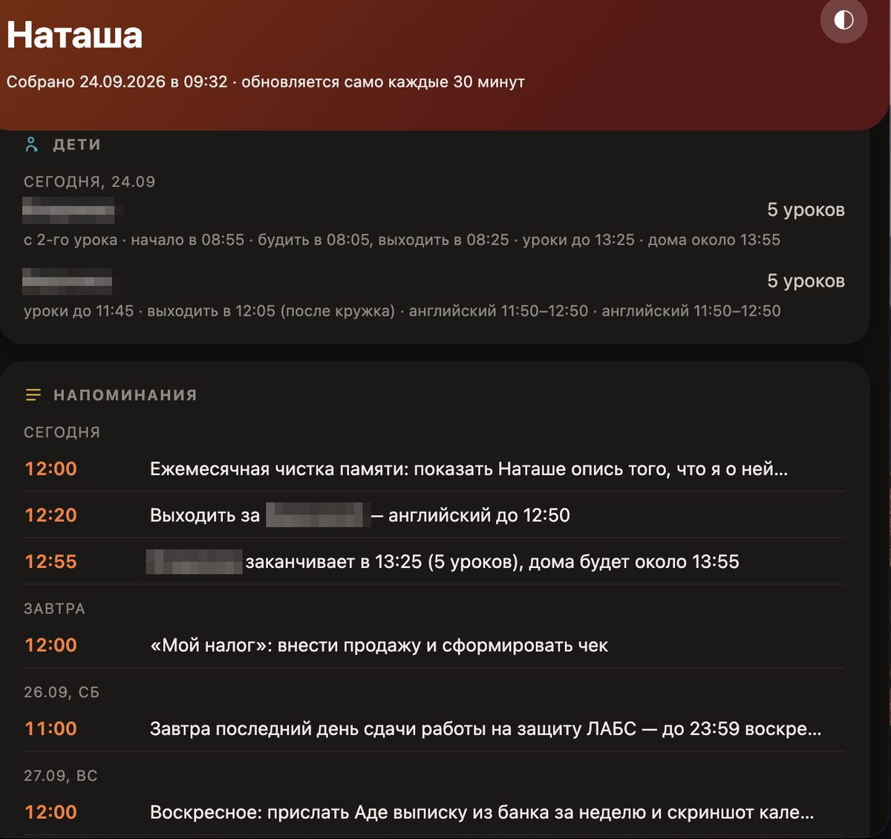
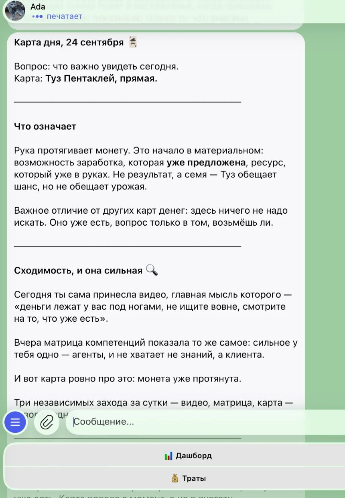
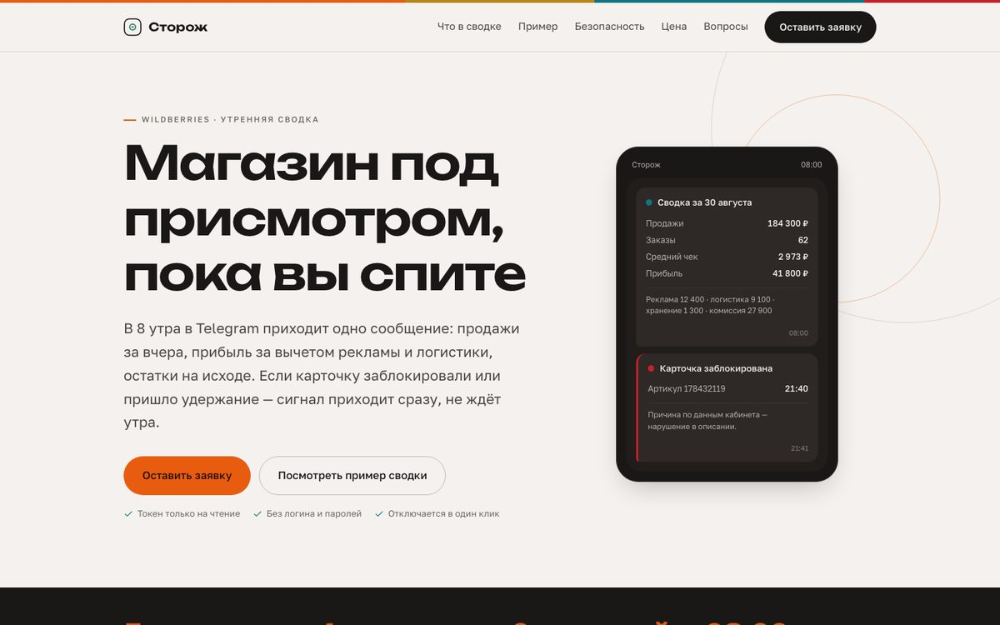
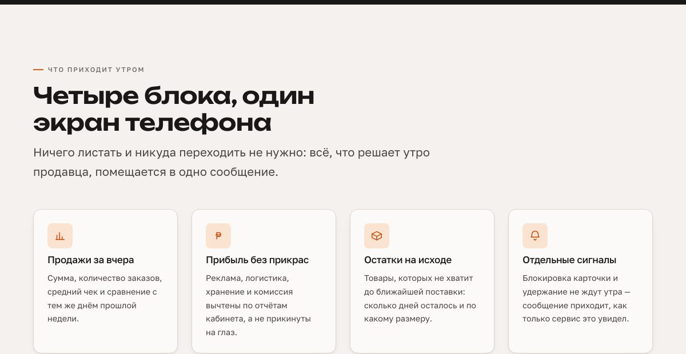
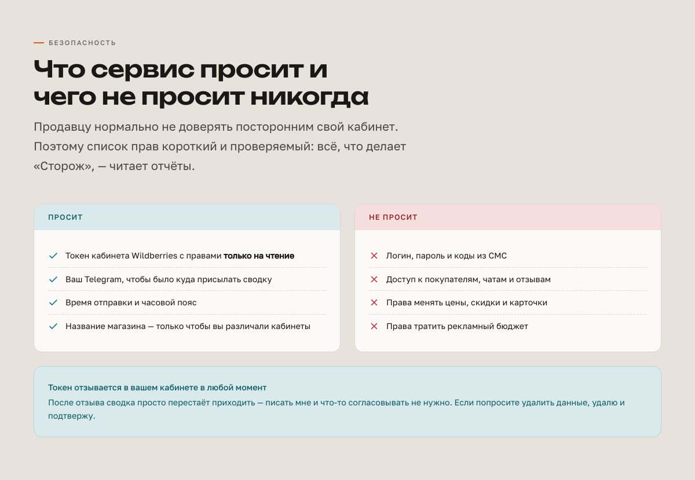
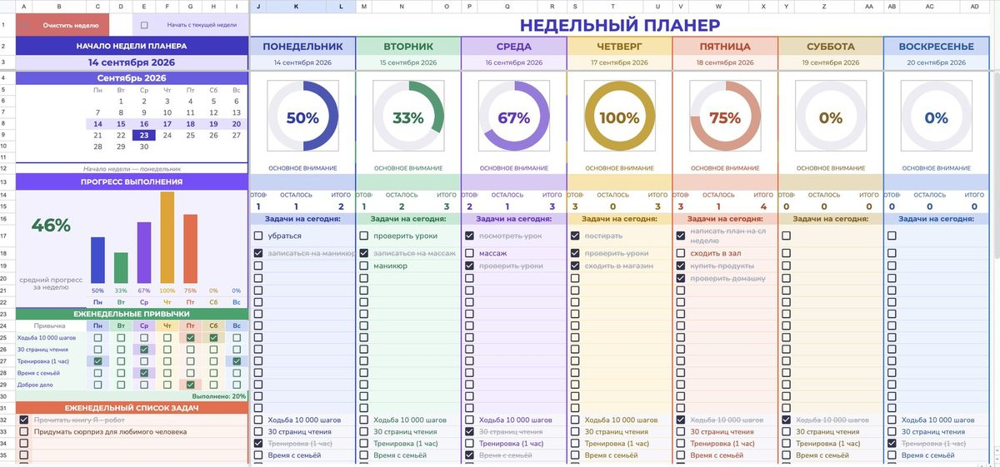
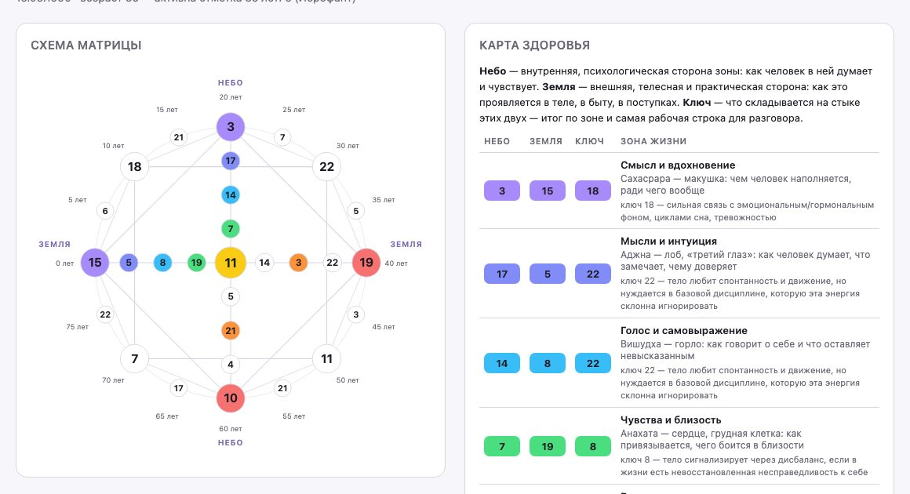
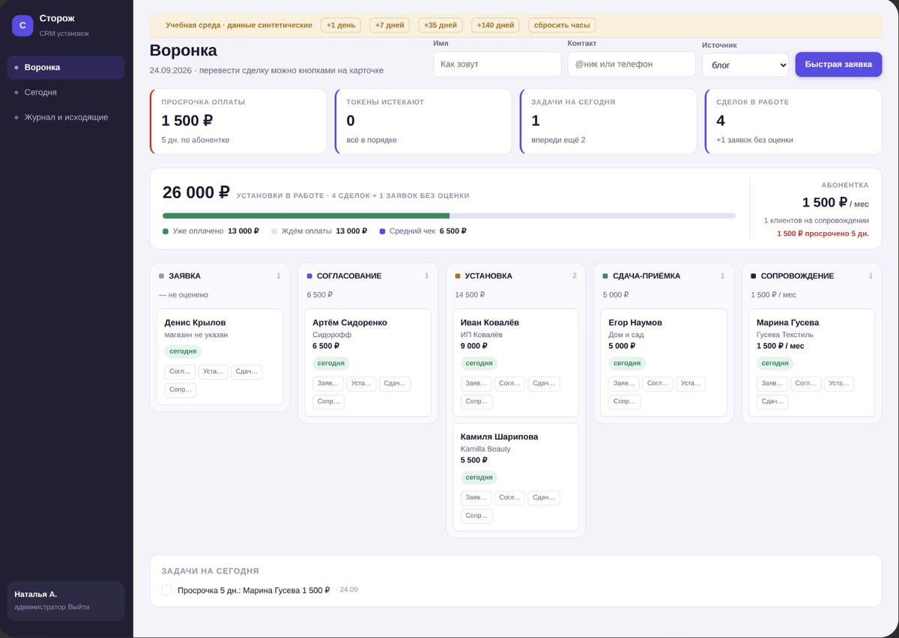
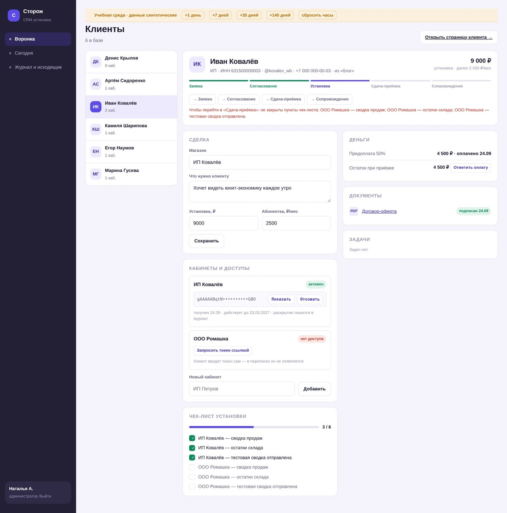

Шесть лет вела кабинеты Wildberries. За поток собрала шесть работ:
ИИ-агента на своём сервере, лендинг с дизайн-системой, планер в Google Таблицах,
два скилла для Claude и CRM. Код пишет ИИ — я ставлю задачу, ищу ошибки и
принимаю работу.
Шесть лет я вела кабинеты Wildberries и знаю изнутри, где магазин тихо теряет
деньги: удержания замечают через месяц, о закрытой карточке узнают по провалу
продаж, а кончившийся товар обнаруживается за четыре дня до поставки. С этой
боли начался мой главный проект.
В ЛАБС я пришла с вопросом: соединить Wildberries с ИИ или найти новое
направление для заработка. За поток получилось и то, и другое.
Шесть работ
Каждая со своим статусом. Всё перечисленное можно открыть или проверить.
1. ИИ-агент Ada на своём сервере
работает
Не облачный бот, а помощник с памятью, характером и доступом к файлам,
который работает без присмотра и отвечает только владельцу.
Решение
Отдельный пользователь на сервере, общение в Telegram, автоперезапуск через cron и tmux, знания подтягиваются с внешней платформы каждые десять минут
Стек
Claude Code · Linux / SSH · Telegram Bot API · cron + tmux · Python · OAuth
Проверено
Подъём за 20 секунд после внезапной перезагрузки сервера. Два тихих сбоя найдены и исправлены при диагностике. Ноль команд от сторонних сервисов выполнено без подтверждения владельца

Веб-дашборд: расписание и напоминания, пересобирается сам каждые 30 минут. Имена детей на скриншоте скрыты.

Агент в Telegram: связывает разные источники за сутки и выдаёт один вывод.
Ссылки нет: агент личный и закрыт для чужих.
2. «Сторож» — лендинг и дизайн-система
опубликован
Утренняя сводка по магазину Wildberries в Telegram: продажи, прибыль, остатки
и блокировки в одном сообщении. Лендинг для продавцов, которые начинают утро с кабинета.
Сделано
Бриф, стоп-лист и палитра → дизайн-система на 18 разделов → лендинг на её токенах → публикация. От брифа до опубликованного сайта — один день
Приём
Каждый блок отвечает на страх или вопрос продавца: что сервис просит и чего не просит никогда, что приходит утром, честный блок «кому пока рано» вместо обещаний всем
Моё
Бриф, направление, приёмка каждой итерации, публикация. Код писал ИИ

Первый экран: обещание и рядом пример того самого сообщения, которое придёт в восемь утра.

Что приходит утром: продажи, прибыль без прикрас, остатки и отдельные сигналы — один экран телефона.

Блок про безопасность: короткий проверяемый список прав вместо общих слов о надёжности.Открыть сайт →
3. Недельный планер в Google Таблицах
готов к продаже
Задачи, привычки и прогресс по дням в одном файле. Работает у покупателя
сразу после копирования — без дополнений и запросов доступа.
Сделано
Сетка недели, кольца прогресса, архив недели одной галочкой, скрипты на Apps Script
Находки
Прошла путь покупателя с чистой копии и нашла то, чего не видно автору: привычки не сбрасывались на новой неделе, дата застывала на моей неделе, Google показывал предупреждение при первом клике. Кнопку заменила галочкой на простом триггере — разрешения больше не нужны
Цена
990 ₽, шаблон плюс версия для Excel. Продаж пока не было

Неделя целиком: кольца прогресса по дням, боковая панель с итогами, привычки и задачи.
Копию высылаю в Telegram по запросу.
4. Скилл «Матрица судьбы» для Claude
работает
Разбор по дате рождения: схема, карта здоровья, этапы жизни. Восемь модулей,
три режима — взрослый, детский, совместимость пары.
Проверка
Расчёт сверен с двумя независимыми источниками — числа сошлись. Автотест на контрольных значениях проходит
Принцип
Где формулу не подтвердить — прочерк, а не выдуманное число

Схема матрицы и карта здоровья по зонам жизни. Дата на примере тестовая.
5. Скилл Nat.ai — система ведения блога
собран
Faceless-аккаунт про ИИ: от регистрации до аналитики и монетизации.
Десять справочников — ниша, хуки, сцена, сценарии роликов.
6. CRM для установок «Сторожа»
первый срез, демо-данные
Вести установку клиентам от заявки до абонентки: воронка из пяти этапов,
деньги, доступы, чек-лист установки.
Сделано
Деньги отдельной линией: предоплата, остаток, абонентка, просрочки. Токены клиентов скрыты, каждый показ пишется в журнал. На следующий этап не пустит, пока не закрыт чек-лист
Учебная среда
Кнопки «+1 день», «+35 дней» — проверить поведение сроков, не дожидаясь их наступления
Дальше
Сценарий приёмки из 14 шагов написан, прохожу его следующим шагом

Воронка: сколько оплачено, сколько ждём, где просрочка. Данные синтетические.

Карточка клиента: деньги, документы, доступы и чек-лист, который не пускает дальше.
Честно про результат
Продаж пока нет, и придумывать их я не буду. За поток я построила
инструменты, а не выручку.
Всё перечисленное можно открыть или проверить: лендинг опубликован, агент
работает каждый день, планер готов к продаже, CRM собрана на демо-данных.
Что я теперь умею
Было: шесть лет в кабинетах Wildberries. Стало — вот это, и каждое видно в проектах.
Довожу идею до опубликованного сайта за деньБриф, дизайн-система, лендинг, публикациявидно в «Стороже»
Разворачиваю ИИ-агента на сервере и чиню егоПрава, доступ, автоперезапуск, диагностика сбоеввидно в агенте
Ставлю ИИ задачу как исполнителю и принимаю работуТЗ, сценарий приёмки, поиск багов, которых не видит авторвидно в CRM и планере
Упаковываю знания в продуктШаблон на продажу, скилл с автотестом и базой знанийвидно в планере и скиллах
Что дальше
Ставлю на CRM на заказ. Ориентир по чеку взяла с эфира: за платформу или CRM не браться меньше чем за 150 000 ₽, а у первого потока был кейс на 700 000 ₽.
Пройти приёмку рукамиПо своему сценарию из 14 шагов
Развернуть CRM на сервереЧтобы появилась ссылка, которую можно открыть
Провести первого клиентаТогда кейс звучит как «работает в деле», а не «собрано»